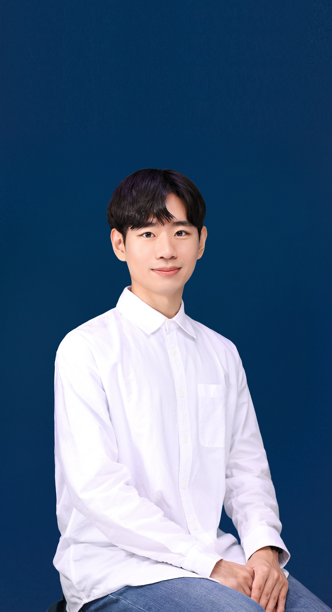

사람들이 자신의 꿈과 역량을 펼칠 수 있도록,
다양한 관점에서 더 나은 경험을 설계합니다.
다양한 관점에서 더 나은 경험을 설계합니다.
# eXperience Design
사용자 경험(UX), 학습 경험(LX), 직원 경험(EX)
─ 사람들의 요구를 분석하여 더 나은 경험을 제공하기 위해 고민합니다.
─ 사람들의 요구를 분석하여 더 나은 경험을 제공하기 위해 고민합니다.
# 3전공 · 다양한 관점
인간컴퓨터상호작용(HCI), 인적자원관리/개발(HR)
─ 분야 간 경계를 넘어 다양한 관점을 탐구하고 공유하는 일을 좋아합니다.
─ 분야 간 경계를 넘어 다양한 관점을 탐구하고 공유하는 일을 좋아합니다.
# 꿈 · 성장
사람들이 자신의 꿈을 향해 나아갈 수 있도록,
성장을 지원하며 소통하는 일을 하고 싶습니다.
성장을 지원하며 소통하는 일을 하고 싶습니다.
📖 Education & Military
2020. 03. ~
서울대학교 자유전공학부 20학번 재학 중
언어학 · 컴퓨터공학 · 교육프로그램설계공학 주전공
2022. 03. ~ 2023. 12.
대한민국 공군 兵 836기 만기전역
2017. 03. ~ 2020. 02.
안양외국어고등학교 중국어과 졸업
🏃 Work & Activities
2026. 01. ~
카이스트 인터랙션 연구실(KIXLAB) 학부생 연구 인턴
AI Tutor Evaluation 프로젝트 연구(NLP)
HCI-Edu 스터디
HCI-Edu 스터디
2025. 06. ~ 2025. 12.
카카오뱅크 People팀 인재영입 어시스턴트
채용 프로세스 관리 및 지원자 · 평가자 커뮤니케이션
면접관 데이터 분석, 입사자 인터뷰 및 VoE 분석
채용 콘텐츠 제작 및 행사 운영 지원
면접관 데이터 분석, 입사자 인터뷰 및 VoE 분석
채용 콘텐츠 제작 및 행사 운영 지원
2025. 03. ~ 2025. 08.
프로메테우스 7기
인공지능 개발 동아리 활동
가정용 심전도 헬스케어 AI 서비스 '콩콩' 프로젝트 (AI 개발)
딥러닝 Pytorch 스터디
가정용 심전도 헬스케어 AI 서비스 '콩콩' 프로젝트 (AI 개발)
딥러닝 Pytorch 스터디
2024. 02. ~ 2024. 12.
차세대 HR 아카데미 35기 인재개발팀장
HR 교육 프로그램 기획 및 진행
HRM/HRD 솔루션 제안 프로젝트
학회 대내외 홍보 콘텐츠 제작 및 채용 진행
HRM/HRD 솔루션 제안 프로젝트
학회 대내외 홍보 콘텐츠 제작 및 채용 진행
2024. 07. ~ 2024. 08.
서울대학교 학습과학연구소 인턴십
학습과학 스터디
AI융합교육 주제 연구
AI융합교육 주제 연구
2021. 12. ~ 2022. 02.
피로그래밍 16기
웹 개발 동아리 활동 (Python, Django, HTML/CSS/JavaScript, Git)
어린이를 위한 블록코딩 질의응답 웹 사이트 '도와줘, 코딩' 프로젝트 (백엔드 개발)
어린이를 위한 블록코딩 질의응답 웹 사이트 '도와줘, 코딩' 프로젝트 (백엔드 개발)
2021. 09. ~ 2022. 02.
꿈을꾸물 교육팀장 & 멘토
고등학생 대상 진로 수업 기획 및 진행
대학생 멘토 워크샵 기획 및 진행
수업 자료 아카이빙 및 개선
대학생 멘토 워크샵 기획 및 진행
수업 자료 아카이빙 및 개선
🧩 Tech Skills
Language
Python · JavaScript · Java
Front-End
HTML/CSS · JavaScript · React · Figma
Back-End
Node.js (Express) · FastAPI · Django
AI (ML & DL)
Pytorch · LangChain
Game & VR
Unity
DevOps & DataBase
AWS · MySQL · MongoDB
Collaboration
Git · Github · Notion · Slack
전공 소개
"인간의 언어는 어떻게 이루어져 있을까?"
언어학은 인간만이 지닌 언어 능력의 구조와 원리를 탐구하는 학문입니다.
인간을 이해하려는 인문학적 문제 의식에서 출발하지만, 자료를 분석하고 가설을 검증하는 자연과학적 방법론에 기반하여 연구를 수행합니다.
이론언어학(음성학, 음운론, 형태론, 통사론, 의미론, 화용론)은 다양한 층위에서 언어의 형식적 구조를 밝히고,
역사비교언어학은 언어의 변화와 계통을, 컴퓨터언어학은 언어를 계산 가능한 모델로 구조화하는 방식을 다루며,
심리언어학과 사회언어학은 언어가 인간의 인지 과정과 사회적 맥락 속에서 어떻게 작동하는지를 탐구합니다.
언어학은 인간만이 지닌 언어 능력의 구조와 원리를 탐구하는 학문입니다.
인간을 이해하려는 인문학적 문제 의식에서 출발하지만, 자료를 분석하고 가설을 검증하는 자연과학적 방법론에 기반하여 연구를 수행합니다.
이론언어학(음성학, 음운론, 형태론, 통사론, 의미론, 화용론)은 다양한 층위에서 언어의 형식적 구조를 밝히고,
역사비교언어학은 언어의 변화와 계통을, 컴퓨터언어학은 언어를 계산 가능한 모델로 구조화하는 방식을 다루며,
심리언어학과 사회언어학은 언어가 인간의 인지 과정과 사회적 맥락 속에서 어떻게 작동하는지를 탐구합니다.
관심 분야
통사론(Syntax) ─ 문장의 구조와 구성 원리
언어 치료(Language Therapy) ─ 언어 발달 및 의사소통의 어려움 진단 및 중재
심리언어학(Psycholinguistics) ─ 언어 이해와 산출의 인지적 처리 과정
언어습득(Language Acquisition) ─ 아동기 언어 발달과 문법 체계 형성 과정
언어 치료(Language Therapy) ─ 언어 발달 및 의사소통의 어려움 진단 및 중재
심리언어학(Psycholinguistics) ─ 언어 이해와 산출의 인지적 처리 과정
언어습득(Language Acquisition) ─ 아동기 언어 발달과 문법 체계 형성 과정
수강 과목
교과 활동
🔎 An Analysis of Two Types of the Chinese Ba Construction
심화통사론 | 25-1학기
💭 Does the activation level of object change when negation is applied to the verb?
심리언어학 | 25-1학기
🏝️ Wh-island effect on semantic interpretation in Korean
실험언어학 | 24-2학기
🎤 Morpho-semantic Awareness of Korean Voice: Focusing on Reflexive and Potential Passive Verbs
형태론 | 24-1학기
전공 소개
"컴퓨터는 어떻게 복잡한 문제를 효율적으로 풀어낼 수 있을까?"
컴퓨터공학은 정보를 표현하고 처리하는 원리를 탐구하는 학문입니다.
수학적 추상화와 논리적 추론을 바탕으로 문제를 모델링하고, 이를 실제로 동작하는 시스템으로 구현하는 과정을 다룹니다.
컴퓨터구조, 시스템프로그래밍, 운영체제는 계산 장치의 구조와 자원 관리 원리를 최적화하는 방법을 탐구하고,
이산수학, 자료구조, 알고리즘은 효율적인 정보 표현과 처리 체계를 설계하는 기반이 됩니다.
이러한 기반 위에서 지능형 시스템과 대규모 네트워크 환경까지 확장하여, 현실의 복잡한 문제를 공학적으로 해결합니다.
컴퓨터공학은 정보를 표현하고 처리하는 원리를 탐구하는 학문입니다.
수학적 추상화와 논리적 추론을 바탕으로 문제를 모델링하고, 이를 실제로 동작하는 시스템으로 구현하는 과정을 다룹니다.
컴퓨터구조, 시스템프로그래밍, 운영체제는 계산 장치의 구조와 자원 관리 원리를 최적화하는 방법을 탐구하고,
이산수학, 자료구조, 알고리즘은 효율적인 정보 표현과 처리 체계를 설계하는 기반이 됩니다.
이러한 기반 위에서 지능형 시스템과 대규모 네트워크 환경까지 확장하여, 현실의 복잡한 문제를 공학적으로 해결합니다.
관심 분야
인간-컴퓨터 상호작용(Human-Computer Interaction) ─ 사용자와 시스템 사이의 상호작용 구조 설계
자연어 처리(Natural Language Processing) ─ 인간 언어의 계산적 모델링과 처리
데이터 마이닝(Data Mining) ─ 대량의 데이터에서 유의미한 정보와 패턴을 추출
모바일 컴퓨팅(Mobile Computing) ─ 모바일 기기에서의 소프트웨어 개발 및 네트워크 통신
자연어 처리(Natural Language Processing) ─ 인간 언어의 계산적 모델링과 처리
데이터 마이닝(Data Mining) ─ 대량의 데이터에서 유의미한 정보와 패턴을 추출
모바일 컴퓨팅(Mobile Computing) ─ 모바일 기기에서의 소프트웨어 개발 및 네트워크 통신
수강 과목
교과 활동
🎮 엔지니오링: 서울대학교 자하연에서 출발한 오리의 공과대학 302동까지의 여정, 3D Auto-Runner 게임
소프트웨어 개발의 원리와 실습 | 24-2학기
🥽 집중하샤: 집중력 향상을 위한 VR 애플리케이션
VR/AR의 개론 및 실습 | 24-2학기
전공 소개
"학습자의 성장을 이끌어내는 교육 프로그램을 어떻게 설계할 수 있을까?"
교육프로그램설계공학은 학습자의 요구와 특성을 분석하고, 과학적 지식과 테크놀로지를 활용하여 효과적인 교육 프로그램을 설계하는 학문입니다.
이는 학생설계전공(Student-designed Major)으로, 학생이 직접 교육과정을 설계하여 학교의 승인을 받은 후 이수하는 전공 과정입니다.
교육 프로그램 설계 교과목군(교육학 · 산업인력개발학)은 학습자를 위한 교육 프로그램을 체계적으로 설계하는 방법을 탐구하며,
학습과 인지과정 교과목군(교육학 · 심리학)은 학습의 원리와 학습자의 특성을 이해하고 학습 효과를 극대화하는 전략을 다룹니다.
또한 테크놀로지 교과목군(컴퓨터공학 · 정보문화학)은 실제 교육 프로그램에 기술을 적절히 적용하는 방식을 연구합니다.
교육프로그램설계공학은 학습자의 요구와 특성을 분석하고, 과학적 지식과 테크놀로지를 활용하여 효과적인 교육 프로그램을 설계하는 학문입니다.
이는 학생설계전공(Student-designed Major)으로, 학생이 직접 교육과정을 설계하여 학교의 승인을 받은 후 이수하는 전공 과정입니다.
교육 프로그램 설계 교과목군(교육학 · 산업인력개발학)은 학습자를 위한 교육 프로그램을 체계적으로 설계하는 방법을 탐구하며,
학습과 인지과정 교과목군(교육학 · 심리학)은 학습의 원리와 학습자의 특성을 이해하고 학습 효과를 극대화하는 전략을 다룹니다.
또한 테크놀로지 교과목군(컴퓨터공학 · 정보문화학)은 실제 교육 프로그램에 기술을 적절히 적용하는 방식을 연구합니다.
관심 분야
인적자원개발(Human Resource Development) ─ 조직과 개인의 역량을 체계적으로 개발 · 관리
교수설계(Instructional Design) ─ 학습자의 요구와 특성을 분석하여 효과적인 교육 프로그램과 수업 방식 설계
학습과학(Learning Sciences) ─ 학습의 원리, 학습자의 인지 과정과 학습 전략에 대한 이해
교육평가(Educational Assessment) ─ 교육 프로그램과 교수설계의 효과를 분석
교수설계(Instructional Design) ─ 학습자의 요구와 특성을 분석하여 효과적인 교육 프로그램과 수업 방식 설계
학습과학(Learning Sciences) ─ 학습의 원리, 학습자의 인지 과정과 학습 전략에 대한 이해
교육평가(Educational Assessment) ─ 교육 프로그램과 교수설계의 효과를 분석
수강 과목
교과 활동
☕ 대학생의 습관적 고당류 카페 메뉴 섭취로 인한 건강 관리의 어려움
HCI 이론 및 실습 | 24-1학기
🏢
차세대 HR 아카데미
연합 HR 학회 : 운영진 인재개발팀장
🌱
꿈을꾸물
진로교육봉사 동아리 : 운영진 교육팀장
🏆 Awards
제1회 서울대학교 생성형 AI 경진대회 최우수상 (서울대학교 총장상)
스누지니어스 (초개인화 졸업 사정 및 규정 검색 서비스)
2025. 12. 22.
2025 DATA VENTURE 문제해결 챌린지 FLEX 과제 최우수상 & 한국연구재단이사장상
FitConnect (구직자 · 기업 AI 인터뷰로 '딱 맞는 매칭'을 제공하는 채용 플랫폼)
2025. 11. 30.
2021 안산을 이야기해줘! 안산스토리 영상 시놉시스 공모전 TV광고 부문 우수상
2021. 05. 06.
안양시장 표창장
2020. 02. 07.
🏅 Certifications
SQL 개발자(SQLD)
재단법인 한국데이터산업진흥원
2025. 04. 04.
직업상담사 2급
한국산업인력공단
2023. 09. 01.
정보처리산업기사
한국산업인력공단
2023. 06. 16.
웹디자인기능사
한국산업인력공단
2022. 12. 02.
데이터분석준전문가(ADsP)
재단법인 한국데이터산업진흥원
2022. 11. 25.
HRM 전문가
한국공인노무사회
2022. 11. 25.
컴퓨터활용능력 1급
대한상공회의소
2022. 03. 18.
워드프로세서
대한상공회의소
2022. 03. 11.
정보처리기능사
한국산업인력공단
2021. 12. 31.
📒 Study
OUTTA AI 부트캠프
2024. 07. ~ 08.
군 장병 AI·SW 역량강화 교육 (엘리스 · 카카오)
2023
🏫 Enrolled Courses
| 과목명 | 개설 학과 | 전공 구분 | 수강 학기 | 학점 |
|---|